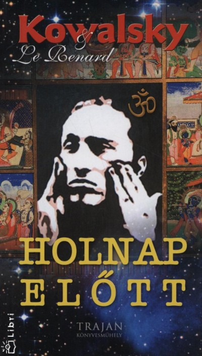
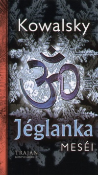
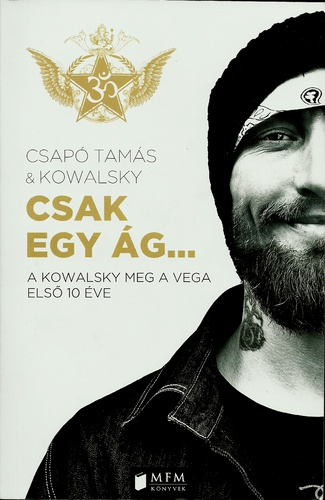

|
Kezdőoldalra
|
|

Kowalsky - Le Renard: Holnap előtt (2005) Két név, két ember: Kowalsky: Black-Out, Mantra, Kowalsky meg a Vega. Énekes, szövegíró, festő, modern polihisztor. Le Lenard: Eleven Cthulhu: Ars Magica antológiák, a Vér városa antológiák – és kb. ötszáz könyv fordítója/szerkesztője/írója. Valamit üzennek: Meggyőződéssel, hittel, féltő szeretettel – ezzel a történettel, amiben kettejük életének epizódjai keverednek a fikcióval, a valós események a fantáziaszülte helyzetekkel és karakterekkel. |
|---|
|

Kowalsky: Jéglanka meséi (2007) Kowalsky immáron csak volt-Black-out frontember, aki a Mantra-ban is énekelt, de ma már csupán a Kowalsky meg a Vega nevű formációjában zenél – ez pedig a második könyve. A Holnap előtt című elsőt még Le Renard-ral közösen írta, aki ez alkalommal (Szántai Zsolt néven) csupán mint szerkesztő működött közre. Ez bizony teljes egészében Kowa műve, egy olyan rockénekesé, aki nagyon sok mindenen ment keresztül. Ám közvetlenül az élettapasztalatairól sokkal kevesebbet írt le ebben a könyvben, mint az előzőben. De nem csak ebben más a Jéglanka meséi. Bár a cím becsapós lehet – ez valójában nem gyermekmese. De nem is „szimplán” regény – inkább valami nagyon érdekes kavalkád. |
|

Kowalsky: Csak egy ág... (2013) Hogyan vezetett az út a drogosok földi poklából a szív forradalmáig? Bankrablóból, kalandorból és más zsiványokból miként lettek az OM zászlaja alatt „forradalmárok”? Miként változtatott meg emberi sorsokat, személyiségeket a Kowalsky meg a Vega születése, változásai és üzenete? Ebből a könyvből mindez kiderül. Sőt. Ennél sokkal több is! A Kowalsky meg a Vega tíz éves fennállásának története interjúkkal, fotókkal, teljes szöveggyűjteménnyel, érdekességekkel, sztorikkal és eddig sehol nem publikált Kowalsky novellákkal. |
|
Kowalsky: Esszencia (2020) Kétségtelen számomra, hogy a figyelem az egyik legértékesebb kincse az embernek… Amire fókuszálja, azt energiával látja el… És – ezzel egy időben – abból energiákat vesz föl… Minden reményemet abba a hitbe fektetem, hogy e kötet méltó lesz figyelmedre, és olyan energiákkal érint meg, amelyek nemhogy távolabb, de sokkal inkább közelebb visznek a bennünk rejtező „Csendes Megfigyelőhöz”, ezáltal EGYmáshoz, az EGYséghez, az ÉLŐlényhez… Tisztelettel, Barátsággal, |
Forrás: moly.hu
|
| Kezdőoldalra |